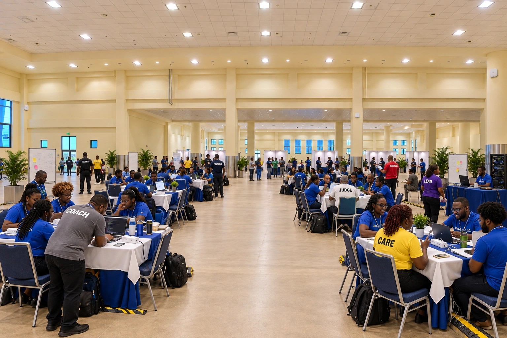

VENUE / AI 360° CONCEPT
Picture the event, room by room
Explore nine proposed event spaces and the accepted meeting-lounge proof in full 360° views.
AI concept · Proposed event activity. These views use historic venue panoramas as a starting point. Room assignments, equipment positions, capacity, clearance, egress and rigging are unverified.
Choose a room inside the viewer. Drag or swipe to look around; arrow keys turn and the labelled buttons show the ceiling, floor and closing seam. Open the viewer on its own.
Image quality and planning limits
Each 360° image keeps its native 1774 × 887 resolution. Detail is soft when enlarged, and small seam or ceiling/floor artifacts remain. Hall A has a rear seam step; the exterior has visible brick distortion at the exact floor pole.
The VIP view does not verify the requested fourteen sofas, the SA-50 / SA-21 shapes, their allocation or physical fit. The separate CAD concept retains its fourteen-sofa allocation study.
People, shirt lettering and equipment appearances are illustrative. Royal blue is the participant-shirt reference; other role colours remain provisional. These images do not confirm attendance, purchasing, installation or final signage.
View the room sources and quality notes · Original venue photography · CAD concept tour
Event activity and equipment previews
Two separate AI concept stills show proposed people, production, camera and IT activity. They are ordinary images; their furniture, equipment positions and staff counts remain illustrative.



People, equipment and source assumptions
Camera, control desk, rack, access-point and staff locations are proposed. The equipment is shown by category; exact product geometry, purchases and delivery are not established. Hall A’s draft does not clearly depict the requested camera; camera operation is visible in Hall B.
Role references are provisional: care yellow, coaches gray, judges white, security black, leads purple, managers red and founders dark blue. Generated lettering and small shirt marks are not approved artwork.
The stills follow the requested 50 × 12 ft stage and 75 × 20 ft main LED concept; conflicting procurement dimensions and switch specifications remain unresolved. These views do not establish electrical, accessibility, rigging or capacity approval.
View image sources and original assumption notes